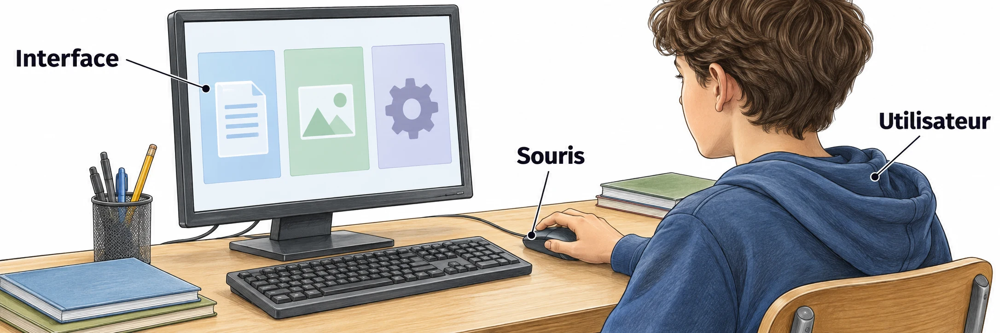

OBSERVER · EXPÉRIMENTER · EXPLIQUER
Une interface qui répond à l’utilisateur
Essaie les événements et l’affichage d’une interface. Puis programme la tienne dans le studio de Q7.

✎ Garde ta feuille à côté de toi.Ouvre ta fiche et suis les numéros Q1 à Q8. Note tes résultats sur papier. Une séance : environ 1 h 20.
Programmer une application mobile
Q1 · Identifier les données
Classe les données : état (0, 1, 2), événement reçu et texte affiché. Utilise entier ou texte. Un compteur de demandes sera aussi un entier.
Q3–Q6 · Préparer ton programme
- Q3 : écris les trois règles avec « si… et… alors… ». Dans les autres cas, l’état doit rester identique.
- Q4 : donne un message pour chaque état. L’affichage est séparé du calcul du nouvel état.
- Q5 : pars de 0, puis essaie Confirmer, Demander, Demander, Confirmer, Réinitialiser. Note les cinq états.
- Q6 : propose quand compter une nouvelle demande, pour ne pas compter deux fois un double clic.
Q8 · Expliquer et adapter ton application
Traduis en français une ligne if… return… de ton programme. Dans le studio, teste les largeurs téléphone (360 px) et tablette (768 px). Vérifie que textes et boutons restent visibles. Ouvre ensuite ton fichier HTML enregistré.
Avant de terminer
Vérifie tes numéros de réponses, tes unités et les observations qui justifient tes conclusions.